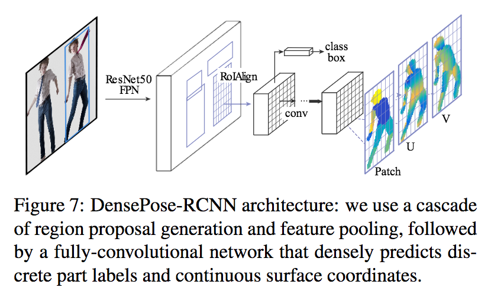

DensePose: Dense Human Pose Estimation In The Wild
Rıza Alp Guler et al., a(href="https://arxiv.org/pdf/1802.00434.pdf" target="blank") https://arxiv.org/pdf/1802.00434.pdf
概要
身体の表面形状まで考慮したDenseな姿勢推定手法に関する研究。サーフェイスモデルを提供するSMPLタイプとアノテーションベースのMSCOCOタイプを提供。手法はMask RCNN（w/ ResNet-50, ROI-align, Regression）をベースに構築している。

新規性・結果
- DenseReg [Guler,CVPR17]は顔表面の推定に対して、本研究では身体全体の表面やデンスなポイントを回帰。
- SMPLやDense-COCOのデータセットを構築
- 非拘束（in the wild）の環境にてDensePoseを学習。
自由記述欄
- リアルが完全に崩壊した。（Face2Faceの全身モデル版が実現可能になった？）
- CG/UIの分野との親和性がより高くなった
- a(href="https://twitter.com/hirokatukataoka" target="blank") Hirokatsu Kataoka